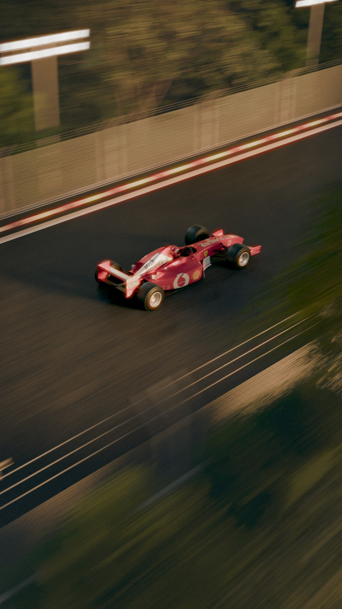

PROJETS
PROJET SUIVANT
PROJETS


 PROJET SUIVANT
PROJET SUIVANT
REPLICA 200201
Les Replica 2002 sont des sneakers imaginées par Thug Club, inspirées des courbes emblématiques de la Formule 1 de 2002.
Le projet visait à fusionner l’univers automobile et celui de la chaussure dans un seul concept visuel dynamique.
De la modélisation 3D d’une semelle haut de gamme à l’animation des véhicules et la simulation de fumée, j’ai assuré plusieurs étapes clés d’une chaîne de production 3D complète.
J’ai également conçu les éléments graphiques dans Illustrator et réalisé le compositing sous After Effects, en y intégrant les Z depths, glow et transitions personnalisées pour sublimer le rendu final.
- 
antoine-riou.github.io | © 2020-2025 Tous droits réservés.